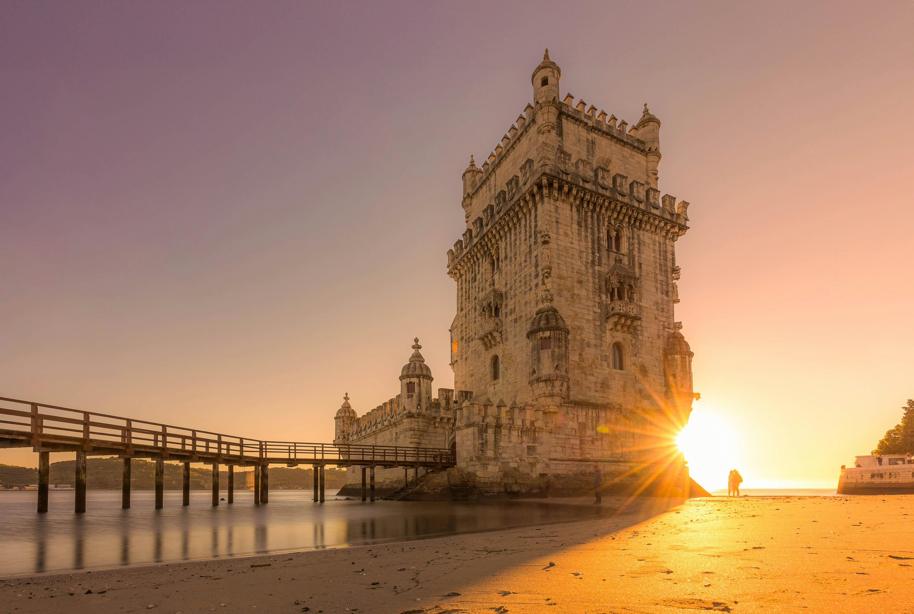
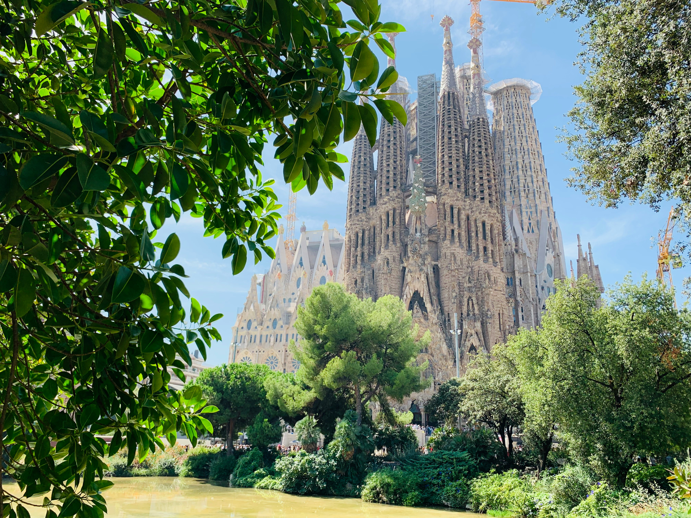
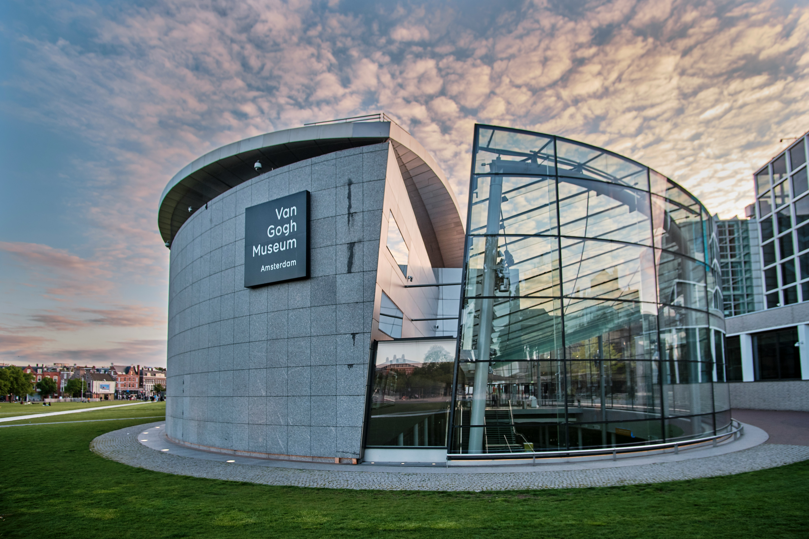

Situada às margens do Rio Tejo, em Lisboa, a Torre de Belém é um dos mais emblemáticos monumentos do país português.
Sagrada Família em Barcelona

Localizada em Barcelona, a Sagrada Família é um dos principais cartões postais da cidade e um dos poucos pontos turísticos na Europa entre os mais visitados do mundo — senão o único — que ainda não terminou de ser construído.
Museu Van Gogh em Amsterdam

Inaugurado em 1973, o museu Van Gogh é dedicado a ninguém mais que o pintor holandês que tem muitas razões para ter ficado conhecido, de suas obras à sua história de vida.